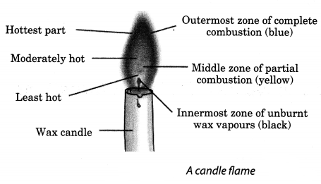
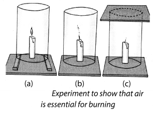
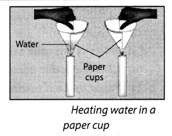
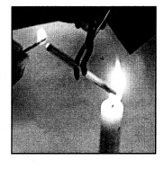
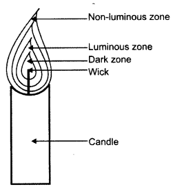
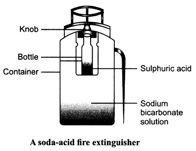

NCERT Solutions for Class 8 Science Chapter 6 Combustion and Flame
Topics and Sub Topics in Class 8 Science Chapter 6 Materials combustion and flame:
| Section Name | Topic Name |
| 6 | Materials combustion and flame |
| 6.1 | What is Combustion? |
| 6.2 | How Do We Control Fire? |
| 6.3 | Types of Combustion |
| 6.4 | Flame |
| 6.5 | Structure of a Flame |
| 6.6 | What is a Fuel? |
| 6.7 | Fuel Efficiency |
Combustion and Flame Class 8 Science NCERT Textbook Questions
Question 1.
List conditions under which combustion can take place.
Answer:
Combustion can take place in the presence of:
(a) a combustible substance.
(b) oxygen, that is, the supporter of combustion.
(c) attainment of ignition temperature of the substance.
Question 2.
Fill in the blanks.
(a) Burning of wood and coal causes _____ of air.
(b) A liquid fuel, used in homes is ______
(c) Fuel must be heated to its ______ before it starts burning.
(d) Fire produced by oil cannot be controlled by ______
Answer:
(a) pollution
(b) LPG
(c) ignition temperature
(d) water
Question 3.
Explain how the use of CNG in automobiles has reduced pollution in our cities.
Answer:
The use of CNG in automobiles has reduced pollution in our cities as it is a quality fuel and has some benefits:
(a) It gives out less carbon dioxide gas, carbon monoxide gas, sulphur dioxide and nitrogen dioxide, which is beneficial as they play crucial role in global warming and acid rain.
(b) It leaves behind no residue after its combustion.
Question 4.
Compare LPG and wood as fuels.
Answer:
| LPG | Wood |
| (i) It does not cause pollution on combustion. | (i) It pollutes air on its combustion. |
| (ii) No smoke is produced. | (ii) It produces smoke. |
| (iii) It is a liquid fuel. | (iii) It is a solid fuel. |
| (iv) It has more calorific value (55000 kJ/kg). | (iv) It has less calorific value (17000 kJ/kg). |
| (v) It can be easily transported, as it is stored in cylinders. | (v) It can’t be transported easily like LPG fuels. |
Question 5.
Give reasons.
(a) Water is not used to control fires involving electrical equipment.
(b) LPG is a better domestic fuel than wood.
(c) Paper by itself catches fire easily whereas a piece of paper wrapped around an aluminium pipe does not.
Answer:
(a) Since water is a good conductor of electricity, it may result in electric shocks to the person trying to extinguish fire.
(b) LPG is better domestic fuel than wood because it does not produce gases, nor does it leave any residue behind. Moreover, it has more calorific value than wood.
(c) As its ignition temperature is low, the paper by itself catches fire easily. But a piece of paper wrapped around an aluminium pipe does not catch fire easily, as the heat being given gets absorbed by the aluminium pipe and the piece of paper does not get its ignition temperature.
Question 6.
Make a labelled diagram of a candle flame.
Answer:

Question 7.
Name the unit in which the calorific value of a fuel is expressed.
Answer:
The unit in which the calorific value of a fuel is expressed is kilojoules per kilogram (kJ/kg).
Question 8.
Explain how CO2 is able to control fires.
Answer:
As CO2 is heavier than oxygen, it forms a blanket around fire, because of which the supply of air is stopped. Men over, it brings down the temperature of the burning substance. In these ways, it plays a significant role in controlling fire.
Question 9.
It is difficult to burn a heap of green leaves but dry leaves catch fire easily. Explain.
Answer:
The green leaves hold some amount of water, so its ignition temperature gets increased and it does not burn easily. On the other hand, dry leaves are waterless, so they catch fire easily (having low ignition temperature).
Question 10.
Which zone of a flame does a goldsmith use for melting gold and silver and why?
Answer:
A goldsmith uses the outermost zone of a flame, which is non-luminous, to melt gold and silver as it is the hottest zone of the flame, having more temperature.
Question 11.
In an experiment, 4.5 kg of a fuel was completely burnt. The heat produced was measured to be 180,000 kJ. Calculate the calorific value of the fuel.
Answer:
Calorific value of a fuel = \(\frac { Heat Produced }{ Amount of fuel }\)
= \(\frac { 180000 }{ 4.5 }\) kJ/kg
= 40,000 kJ/kg.
Question 12.
Can the process of rusting be called combustion? Discuss.
Answer:
The process of rusting emits heat during the formation of its oxide. So we can call the process of rusting as slow combustion.
Question 13.
Abida and Ramesh were doing an experiment in which water was to be heated in a beaker. Abida kept the beaker near the wick in the yellow part of the candle flame. Ramesh kept the beaker in the outermost part of the flame. Whose water will get heated in a shorter time?
Answer:
The water which was put by Ramesh will get heated in a shorter time; because he had put it nearer to the hottest zone of the flame.
Combustion and Flame Class 8 Science NCERT Intext Activities Solved
Activity 1 (NCERT Textbook, Page 65)
Collect some materials like straw, matchsticks, kerosene oil, paper, iron nails,^ stone pieces, glass, etc. Under the supervision of your teacher try to burn each of these materials one by one. If combustion takes place mark the material combustible, otherwise mark it non-combustible (Table 6.1).
Solution:
Combustible and Non-combustible Substances
| Material | Combustible | Non-combustible |
| Wood | ✓ | |
| Paper | ✓ | |
| Iron nails | ✓ | |
| Kerosene oil | ✓ | |
| Stone piece | ✓ | |
| Straw | ✓ | |
| Charcoal | ✓ | |
| Matchsticks | ✓ | |
| Glass | ✓ |
Activity 2 (NCERT Textbook, Page 65) (Caution: Be careful while handling burning candle).
Fix a lighted candle on a table. Put a glass chimney over the candle and rest it on a few wooden blocks in such a way that air can enter the chimney [Fig. 6;3(a)]. Observe what happens to the flame. Now remove the blocks and let the chimney rest on the table [Fig. 6.3(b)]. Again observe the flame. Finally, put a glass plate over the chimney [Fig. 6.3(c)]. Watch the flame again. What happens in the three cases? Does the flame flicker off? Does it flicker and give smoke? Does it burn unaffected? Can you infer anything at all about the role played by air in the process of burning?

Solution:
The candle burns freely in case (a) when air can enter the chimney from below. In case (b), when air does not I enter the chimney from below, the flame flickers and produces smoke. In case (c), the flame finally goes off because the air is not available.
Activity 3 (NCERT Textbook, Page 66)
Place a piece of burning wood or charcoal on an iron plate or Tawa. Cover it with a glass jar or a tumbler, or a transparent plastic jar. Observe what happens. Does charcoal stop burning after sometime? Can you think of a reason why it stops burning?
Solution:
After burning under the jar for some time, the wood/charcoal stops burning due to the discontinuous supply of air (or oxygen present in the air).
Activity 4 (NCERT Textbook, Page 67) (Caution: Be careful while handling burning candle)
Make two paper cups by folding a sheet of paper. Pour about 50 ml. of water in one of the cups. Heat both the cups separately with a candle (Fig. 6.4). What do you observe?

Solution:
It is observed that the empty cup catches fire immediately and begins to burn, whereas the cup containing water does not burn; instead, the water present in it becomes hot.
Activity 5 (NCERT Textbook, Page 77)
Light a candle (Caution: Be careful). Hold a glass tube with a pair of tongs and introduce its one end in the dark zone of a non-flickering candle flame (Fig. 6.5). Bring a lighted matchstick near the other end of the glass tube. Do you see a flame? If so, what is it that produces a flame?

Solution:
When we bring a lighted matchstick near the other end of the glass tube then we observe a flame. The vapourised wax from candle produces this flame.
NCERT Solutions for Class 8 Science Chapter 6 – 1 Mark Questions and Answers
Question 1.
An important liquid fuel, used in home is ……….. [KVS 2008]
Answer:
Kerosene
Question 2.
What are the main constituent of biogas and kitchen gas (L.P.G.) ? [NCT 2005]
Answer:
The main constituent of biogas is methane and of kitchen gas (L.P.G.) is butane.
Question 3.
What is biogas ? [KVS 2005]
Answer:
Biogas is formed by the decomposition of plant and animal wastes.
Question 4.
Fuel must be heated to its ……….. temperature before it starts burning. [KVS 2005]
Answer:
Fuel must be heated to its ignition temperature before it starts burning.
Question 5.
……….. is a liquid fuel.
Answer:
Petrol is a liquid fuel.
Question 6.
When fuels bum what do they produce ?
Answer:
They produce heat and light.
Question 7.
List conditions under which combustion can take place. [NCERT]
Answer:
The conditions under which combustion can take place :
- Presence of combustible substance.
- Presence of supporter of combustion i.e., oxygen.
- Attainment of ignition temperature
Question 8.
Define combustion.
Answer:
Combustion is the process of burning of substances to give heat and light.
Question 9.
What name is given to the substances which can bum easily ?
Answer:
Combustible substances.
Question 10.
Give two examples of the combustible substances.
Answer:
Kerosene oil and wood.
Question 11.
What name is given to the substances which do not bum ?
Answer:
Non-combustible substances.
Question 12.
Classify the following as combustible and non-combustible substances- Paper, iron nails, cloth, glass.
Answer:
Combustible substances – paper, cloth.
Non-combustible substances – iron, nails, glass.
Question 13.
How is heat and light produced in the sun ?
Answer:
In the sun, heat and light are produced by nuclear fusion actions.
Question 14.
When does a substance start burning ?
Answer:
A substance starts burning when its ignition temperature is reached.
Question 15.
Give two examples of inflammable substances.
Answer:
Petrol and LPG.
Question 16.
When does a fire brigade arrive ?
Answer:
When the building catches fire, a fire brigade is called to put off the fire.
Question 17.
How does the fire brigade put off fire ?
Answer:
It put off the fire by using water under pressure.
Question 18.
When water is poured on a fire, which condition of combustion is not fulfilled ?
Answer:
The ignition temperature of combustible substance is lowered.
Question 19.
What is meant by rapid combustion?
Answer:
A combustion in which a substance bums rapidly and produces heat and light is known as rapid combustion.
Question 20.
What name is given to combustion which takes place on its own?
Answer:
Spontaneous combustion
Question 21.
When crackers are ignited, what type of combustion takes place?
Answer:
Explosion.
Question 22.
What is a flame ?
Answer:
A flame is a region where combustion of gases takes place.
Question 23.
Which substances bum with a flame ?
Answer:
The substances which vapourize during burning, form a flame.
Question 24.
What is meant by global warming ?
Answer:
Global warming is the rise in temperature of the environment of the earth.
Question 25.
What is acid rain ?
Answer:
Sulphur dioxide and nitrogen oxides dissolve in rain water and form acids. Such rain is called acid rain.
Question 26.
How is acid rain harmful ?
Answer:
Acid rain corrodes buildings and reduces the fertility of soil by making acidic.
Question 27.
What is the full form of LPG ?
Answer:
Liquefied Petroleum Gas.
Question 28.
Why is a smelling agent added to LPG ?
Answer:
LPG does not have any smell, so to detect the leakage of the gas, a smelling agent is added to it.
Question 29.
Why is respiration referred to as slow combustion ?
Answer:
During respiration, oxidation takes place but energy is released so slowly that we cannot see it happening. Therefore, it is known as slow combustion.
Question 30.
Give one reason why LPG is a better fuel than kerosene ?
Answer:
LPG is a better fuel than kerosene because it has a higher calorific value.
Question 31.
Why does yellow phosphorus catch fire on its own ?
Answer:
The ignition temperature of yellow phosphorus is very low, so it catches fire on its own when exposed to air.
Question 32.
A person sleeping in a closed room with burning coal, feels suffocated after sometime. Why ?
Answer:
In a closed room, carbon monoxide is produced which is a poisonous gas.
NCERT Solutions for Class 8 Science Chapter 6 – 2 Mark Questions and Answers
Question 1.
Abida and Ramesh were doing an experiment in which water was to be heated in a beaker. Abida kept the beaker near the wick in the yellow part of the candle flame. Ramesh kept the beaker in the outermost part of the flame. Whose water will get heated in a shorter time ? Why? [NCERT]
Answer:
Ramesh’s water will get heated faster because it is kept in the outermost zone of the flame which is hottest part of flame.
Question 2.
Explain how CO2 is able to control fires. [NCERT]
Answer:
Carbon dioxide is used for extinguishing fire because it is a non-supporter of combustion and is non-combustible. Also it is heavier than air and settles on the fire.
Question 3.
What is a fuel ? Name two liquid fuels.
Answer:
A substance which on burning produces heat energy is called a fuel. Kerosene and petrol are liquid fuels.
Question 4.
Is the food a fuel for our body ?
Answer:
Yes, in our body food is broken down by reaction with oxygen and heat is produced.
Question 5.
Distinguish between combustible and non-combustible substances.
Answer:
Combustible substances : The substances which bum easily are called combustible substances, e.g., paper, cloth.
Non-combustible substances : The substances which do not bum easily are called Non-combustible substances, e.g., iron, glass.
Question 6.
Can you bum paper when a burning matchstick is brought near it ? Why ?
Answer:
A paper can be burnt with a burning matchstick because of its low ignition temperature.
Question 7.
What is forest fire ?
Answer:
During extreme heat of summer, at some places dry grasses catch fire. This fire then spreads to trees and the whole forest is on fire.
Question 8.
Why do different substances catch fire at different temperatures ?
Answer:
Different substances catch fire at different temperatures because they have different ignition temperatures.
Question 9.
Kerosene oil catches fire faster than wood. Why ?
Answer:
The ignition temperature of kerosene is lower than that of wood, so it bums quickly
Question 10.
Why is water poured to extinguish burning wood ?
Answer:
When water is poured on burning wood, the temperature of wood falls below its ignition temperature. This prevents fire from spreading.
Question 11.
Can you put off a fire due to electric short circuit by using water ? Why ?
Answer:
We cannot put off a fire due to electric short circuit by using water because water is a conductor of electricity and may result in electric shock.
Question 12.
Supposing the kerosene oil catches fire. How will you put it off ?
Answer:
A fire due to kerosene oil can be put off by throwing sand or soil over it.
Question 13.
How is fire extinguished at airports and petrol pumps ?
Answer:
At airports and petrol pumps fire is extinguished by using foam type fire extinguisher.
Question 14.
What is meant by spontaneous combustion ? Give one example of a substance which shows spontaneous combustion.
Answer:
The combustion in which a material suddenly bursts into flame without the application of any apparent cause is called spontaneous combustion, e.g., phosphorus.
Question 15.
Which substances bum with a flame ?
Answer:
Those solids or liquids which vaporize on being heated, bum with a flame.
Question 16.
Does magnesium bum with a flame ? Why ?
Answer:
Magnesium does not bum with a flame because it bums as a solid.
Question 17.
Camphor bums with a flame, but charcoal glows. Why ?
Answer:
Camphor has low ignition temperature and vapourizes to bum with a flame but charcoal does not vapourize.
Question 18.
Hydrogen has the highest calorific value, but it is not used as a fuel. Why ?
Answer:
Hydrogen forms an explosive mixture with oxygen and it is difficult to handle. Therefore, it is not used as a fuel.
Question 19.
Why petrol cannot be used as a fuel in stoves at homes ?
Answer:
Petrol vapourizes easily and catches fire easily as its ignition temperature is low. Therefore, it is dangerous to use in the stoves.
Question 20.
Amit and Sunil were doing an experiment in which water was to be heated in a beaker. Amit kept the beaker near the wick in the yellow part of the candle flame. Sunil kept the beaker in the outermost part of the flame. Whose water will get heated in a shorter time ? Why ?
Answer:
Sunil’s water will get heated faster than Amit’s water because outermost part of candle flame is the hottest.
NCERT Solutions for Class 8 Science Chapter 6 – 3 Mark Questions and Answers
Question 1.
- Name the type of nuclear reaction taking place in the atmosphere of Sun.
- Define ignition temperature.
- Why water should not be used to put out fire caused by burning of petrol. [MSE (Chandigarh) 2008]
Answer:
- Nuclear fusion.
- The minimum temperature to which a substance is heated before it starts burning is known as ignition temperature.
- Petrol is lighter than water, so it floats on top of water and continuous burning. So, it cannot be used for extinguishing fire due to burning of petrol.
Question 2.
Give two examples each of solid fuel, liquid fuel and gaseous fuel. [KVS 2008]
Answer:
- Solid fuel — coal, wood
- Liquid fuel — petrol, kerosene
- Gaseous fiiel — LPG, methane
Question 3.
Write any four characteristics of an ideal fuel. What is C.N.G. ? Mention its one use. [DAV2005]
Answer:
- It is cheap and easily available. ,
- It does not produce any harmful gas during burning.
- It has high calorific value.
- It is safe and easy to store.
C.N.G – Compressed Natural Gas. It is used as a fuel for automobiles.
Question 4.
Explain the different zones of a flame with the help of a neat and well labelled diagram.
Answer:
- The innermost zone is the dark zone. It contains unbumt vapours of wax.
- The second zone is the yellow zone where incomplete combustion takes place. It is known as luminous zone.
- The thin outermost zone of the flame is blue in colour and complete combustion takes place. This is the non-luminous zone.

Question 5.
- Which is the hottest zone and the coolest zone of a flame ?
- Why does the middle zone of the candle flame glow with yellow colour ?
Answer:
- The innermost or dark zone has minimum temperature. The outermost or non-luminous zone has maximum temperature.
- In the middle zone, the unbumt carbon particles give the flame its yellow colour.
Question 6.
Why do we use paper or kerosene oil to start fire in wood or coal ?
Answer:
The ignition temperature of wood or coal is very high. So, we bum paper or kerosene oil to provide large amount of heat, as they have a low ignition temperature.
Question 7.
Explain how water extinguishes the fire.
Answer:
Water cools the combustible material so that its temperature is brought below its ignition temperature. Water vapours also surround the combustible material, helping in cutting the supply of air. So, the fire is extinguished.
Question 8.
How does the foam type fire extinguisher work ?
Answer:
At airports and petrol pumps, the foam type fire extinguisher is used which is based on the principle of smothering the fire. In this extinguisher, sodium bicarbonate contains Turkey red oil. When it is operated, carbon dioxide liberated in reaction of dilute sulphuric acid with sodium bicarbonate comes out under pressure in the form of a foam and settles on the fire.
Question 9.
You are given three substances A, B and C. How will you find out which of them as a combustible material ?
Answer:
He will bum each substance with the help of match stick. If it bums it is a combustible substance and if it doesnot bum it is a non-combustible substance.
Question 10.
When the clothes of a person catches fire, we cover him with a blanket. Why ?
Answer:
When the person is covered with a blanket, the supply of oxygen is cut off. So, the fire is put off.
Question 11.
Red buckets containing sand are kept in offices and cinema halls. Why ?
Answer:
These are kept so as to extinguish the fires. When there is a fire, sand is thrown on it, so as to cut off the supply of oxygen.
Question 12.
What is the function of a wick in the candle ?
Answer:
The wick draws up the molten wax, which than bums to form a flame.
NCERT Solutions for Class 8 Science Chapter 6 – 5 Mark Questions and Answers
Question 1.
- What is a fuel ?
- Define calorific value of a fuel. [DAV1997]
- Give the characteristics of a good fuel.
Answer:
- A fuel is a substance which gives heat on burning.
- Calorific value is the amount of heat energy produced on complete combustion of 1 kg of fuel. It is expressed as KJ/Kg.
- Characteristics of a good fuel are –
- It should have high calorific value.
- It should not leave ash behind.
- It should be easy to store, transport and handle.
- It should have convenient ignition temperature.
Question 2.
Fill in the blanks : [NCERT]
- Burning of wood and coal causes ………. of air.
- A liquid fuel, used in homes is ……….
- Fuel must be heated to its ……….. before it starts burning.
- Fire produced by oil cannot be controlled by ……………
Answer:
- pollution
- kerosene
- ignition temperature
- water.
Question 3.
Explain how the use of CNG in automobiles has reduced pollution in our cities. [NCERT]
Answer:
CNG produces no pollutants like carbon dioxide, carbon monoxide, unbumt carbon particles and sulphur dioxide. Therefore, it has reduced pollution in our cities.
Question 4.
Give reasons. [NCERT]
- Water is not used to control fires involving electrical equipment.
- LPG is a better domestic fuel than wood.
- Paper by itself catches fire easily whereas a piece of paper wrapped around an aluminium pipe does not.
Answer:
- Water is not used to control the fire involving electrical equipment because it is a good conductor of electricity. The person using it can get a shock.
- LPG is a better domestic fuel than wood because
- It does not give out smoke.
- It has high heat content.
- It does not leave ash behind.
- It is easily available.
- Paper by itself catches fire easily because it is a highly combustible substance. But when it is wrapped on aluminium, it does not bum because aluminium is a good conductor of heat and it takes the heat from paper.
Question 5.
It is difficult to bum a heap of green leaves but dry leaves catch fire easily. Explain. [NCERT]
Answer:
Green leaves contain moisture, so they do not catch fire. Dry leaves do not contain moisture, so they catch fire easily. Moisture increases the ignition temperature of leaves.
Question 6.
In an experiment 4.5 kg of a fuel was completely burnt. The heat produced Was measured to be 1,80,000 kJ. Calculate the calorific value of the fuel. [NCERT]
Answer:
Heat produced = 180,000kJ
Mass of fuel = 4.5 kg
Calorific value = 180,000 kJ/4.5 kg = 40,000 kJ/kg.
Question 7.
Can the process of rusting be called combustion ? Discuss. [NCERT]
Answer:
Rusting is an oxidation process but it cannot be called combustion because heat and light are not produced.
Question 8.
Compare LPG and wood as fuels. [NCERT]
Answer:
LPG is a better domestic fuel than wood because
- It does not give out smoke.
- It has high heat content.
- It does not leave ash behind.
- It is easily available.
Question 9.
Give some effects of fuels combustion.
Answer:
- Carbon fuels release unbumt carbon particles and cause asthma.
- Incomplete combustion forms carbon monoxide which is a poisonous gas.
- Combustion of fuels releases carbon dioxide which causes global warming.
- Increased use of fuel causes acid rain which harm crops, buildings and soil.
Question 10.
Why is wood used as a fuel in villages ? What are the disadvantages of using wood as a fuel ?
Answer:
In villages wood is used because it is easily available and cheap.
Its disadvantages are:
- It produces lot of smoke which causes respiratory problems.
- Wood contains several important substances which are lost when it is burnt,
- Cutting of trees leads to deforestation.
Question 11.
Draw a labelled diagram to show the construction of soda-acid fire extinguisher and explain its working.
Answer:

In the soda-acid fire extinguisher, carbon dioxide is produced by the reaction of sulphuric acid and sodium bicarbonate. The bottle containing sulphuric acid is struck with a knob and the reaction starts.

Carbon dioxide produce is neither combustible nor supporter of combustible. Being heavier than air it forms a blanket over the fire and cuts off the supply of air. The water formed cools the substance below its ignition temperature.
NCERT Solutions for Class 8 Science Chapter 6 MCQs
Question 1.
The gas required for combustion is [NCERT]
(a) oxygen
(b) nitrogen
(c) carbon dioxide
(d) hydrogen
Answer:
(a)
Question 2.
Burning of hydrogen is an example of
(a) slow combustion
(b) rapid combustion
(c) explosion
(d) spontaneous combustion
Answer:
(c)
Question 3.
The gas produced in the working of soda-acid type fire extinguisher is
(a) carbon dioxide
(b) oxygen
(c) sulphur dioxide
(d) hydrogen
Answer:
(a)
Question 4.
The fuel used in the human body to produce energy, is
(a) coal
(b) food
(c) juices
(d) paper
Answer:
(b)
Question 5.
Burning of LPG at home is an example of
(a) slow combustion
(b) rapid combustion
(c) spontaneous combustion
(d) explosion
Answer:
(b)
Question 6.
Which one of the following will show spontaneous combustion?
(a) Sodium
(b) Calcium
(c) Sulphur
(d) Carbon
Answer:
(a)
Question 7.
Which of the following can be used to extinguish fire at the petrol pump ?
(a) Water
(b) Carbon dioxide
(c) Blanket
(d) None of these
Answer:
(b)
Question 8.
While shaping gold into ornaments, which part of the flame directly used by goldsmith?
(a) Non-luminous
(b) Luminous
(c) Innermost zone
(d) Whole flame
Answer:
(a)
Question 9.
Which fuel is the ideal fuel to be used at home ?
(a) LPG
(b) CNG
(c) Wood
(d) Coal
Answer:
(a)
More CBSE Class 8 Study Material
- NCERT Solutions for Class 8 Maths
- NCERT Solutions for Class 8 Science
- NCERT Solutions for Class 8 Social Science
- NCERT Solutions for Class 8 English
- NCERT Solutions for Class 8 English Honeydew
- NCERT Solutions for Class 8 English It So Happened
- NCERT Solutions for Class 8 Hindi
- NCERT Solutions for Class 8 Sanskrit
- NCERT Solutions